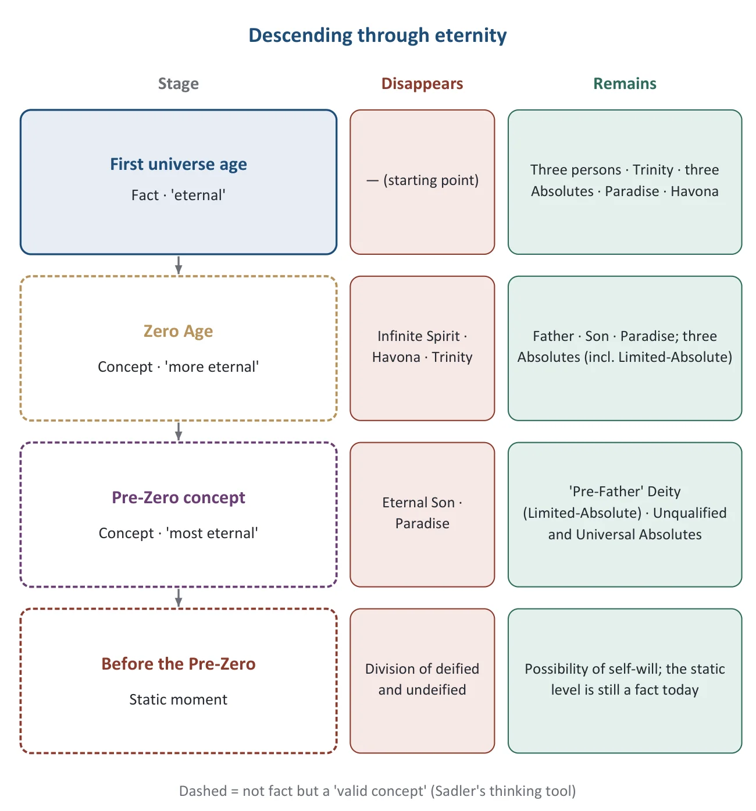
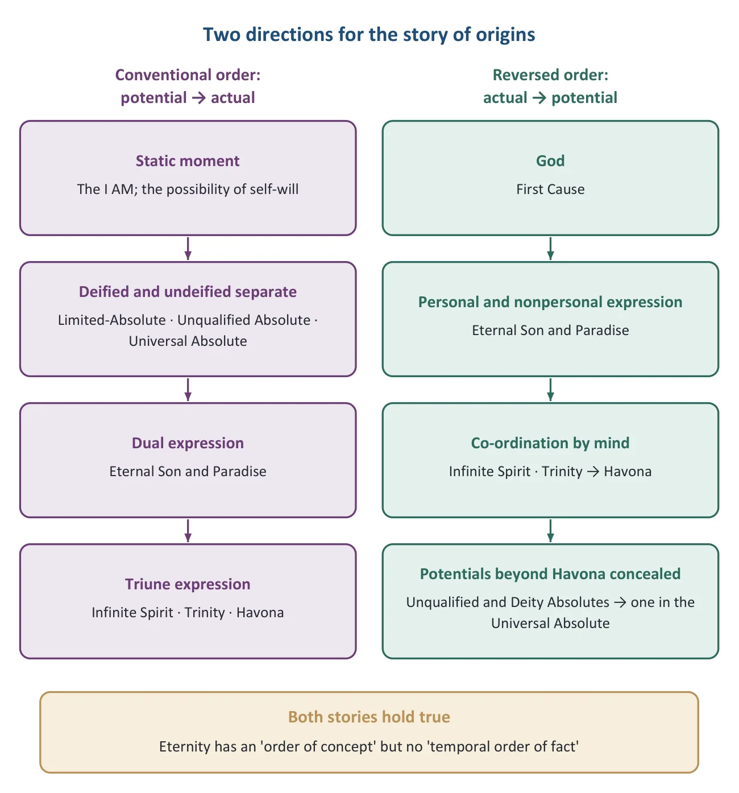

Original : Annexe I, Antécédents du maitre univers (p. 149–165)
Dans cette première annexe, Sadler conduit une expérience de pensée qui remonte le temps. Son point de départ est le noyau éternel qui subsiste même après que l’espace extérieur, puis les superunivers, se sont vidés : le système Paradis-Havona. Il commence par faire l’inventaire de ce que la Havona du premier âge contenait et ne contenait pas. Puis, quittant le domaine des faits, il descend à travers trois stades hypothétiques qu’il nomme l’Âge Zéro, le concept Pré-Zéro et ce qui se trouve avant le Pré-Zéro. Il termine en montrant que l’histoire des origines fonctionne tout aussi bien lorsqu’on la raconte à rebours, et conclut que l’ordre à l’intérieur de l’éternité est un ordre de concepts plutôt que de temps.
Avec ce chapitre, le commentaire entre dans sa seconde partie et aborde une à une les annexes de Sadler. Dans les douze chapitres du texte principal, il a esquissé la grande trame de l’histoire du maitre univers ; dans les annexes, il dégage les idées qui sous-tendent cette histoire et examine chacune en profondeur. Les annexes sont donc plus détaillées que les chapitres, plus audacieuses dans leurs raisonnements et beaucoup plus densément annotées de références au Livre d’Urantia. Les trois premières traitent de la scène elle-même : ce qui existait avant le maitre univers (annexe I), quel genre de réalité est l’Ile centrale du Paradis (annexe II) et comment est organisé l’espace dans lequel se déploie le maitre univers (annexe III). Ici comme partout, les énoncés révélés et les propres inférences de Sadler sont soigneusement tenus à part.
Sadler nous invite à faire défiler le maitre univers actuel à l’envers, comme une bobine de film. Plus la bobine remonte, moins il reste d’étoiles et de nébuleuses dans l’espace extérieur, jusqu’à ce que l’espace extérieur soit entièrement vide ; tournez-la encore un peu, et les superunivers se raréfient et finissent par disparaitre eux aussi. C’est à peu près la période que le Livre d’Urantia appelle le passé « proche de l’éternité » ou l’aurore du temps. Pourtant, si nous continuons à rembobiner au-delà de ce point, plus rien ne change. Le Paradis est toujours au centre, et Havona tourne toujours autour de lui. Comme rien du tout ne se trouvait en dehors de lui, Havona n’aurait pas été, à cette époque, l’univers « central », mais simplement « l’ » univers.
En bref, l’Esprit Infini témoigne que, puisqu’il est éternel, l’univers central l’est aussi. Tel est le point de départ traditionnel de l’histoire de l’univers des univers.8:1.9
Sadler résume le maitre univers comme trouvant à s’exprimer trois fois : dans la perfection de Havona au cours du premier âge ; dans l’âge présent, où les superunivers imparfaits entrent en relation avec Havona et forment ensemble le grand univers ; et dans un avenir où les univers extérieurs encore vides seront mis en relation avec le grand univers. Le maitre univers en tant qu’idée, cependant, était conçu dès le tout début, comme un plan vivant, par les Architectes du Maitre Univers. L’annexe examine d’abord le premier âge dans le domaine des faits, puis se tourne vers la question de ce qui est venu « avant Havona ». La prémisse de travail de Sadler est qu’une telle réflexion peut produire des concepts valides même lorsqu’elle ne peut produire de faits. Le texte lui-même, après tout, parle d’un moment hypothétique antérieur à Havona comme de l’« aurore de l’éternité ».
La Havona que décrit le Livre d’Urantia est en fait la Havona du deuxième âge, notre propre ère. Comment était-elle au premier ? Sadler commence par diviser sa structure physique en trois parties : les trois circuits de satellites proches du Paradis (sept mondes chacun pour le Père, le Fils et l’Esprit), les sept circuits planétaires portant le milliard de sphères, et les deux ceintures de corps de gravité obscurs au bord extérieur. Toutes trois, conclut-il, existaient déjà au premier âge.
Ces vingt-et-un mondes sont tous d’énormes sphères et chaque groupe de sept est éternisé différemment.13:0.2
Des mots « éternisé différemment », Sadler tire l’indication que, même à l’intérieur de l’éternité, il existe des degrés de dérivation. Il note aussi que seuls les sept mondes du Fils ont une constitution physique commune, tandis que les quatorze autres diffèrent chacun, ce qui, selon son calcul, implique au moins quinze modes de matérialisation qui nous sont inconnus. Pour autant qu’il puisse en juger, le seul changement physique introduit au deuxième âge fut l’intégration des directeurs de pouvoir de l’univers central à ceux des superunivers [29:1.3]. Ce qui changea de façon spectaculaire, ce fut l’activité des personnalités.
Sadler part de l’affirmation du texte selon laquelle les Sept Maitres Esprits sont les premières personnalisations de la Déité expérientielle.
Avec l’Esprit, le cycle existentiel de personnalisation de la Déité est accompli. Les personnalités primaires issues de la Source-Centre Troisième sont expérientielles, et au nombre de sept.10:2.7
Il s’ensuit que la Havona du premier âge était un univers entièrement existentiel, ne contenant aucun être dont l’origine soit postérieure à celle des Maitres Esprits. Que se passait-il donc sur Ascendington avant qu’il y ait des ascendeurs ? Qui habitait Sonarington quand aucun fils descendant n’était encore apparu ? Divinington a bien pu être le foyer des fragments du Père dès cette époque, mais aucun Ajusteur n’était encore parti habiter un mental humain. Le texte dit lui-même que la population de ces sphères secrètes est redistribuée selon les âges de l’univers [13:2.5].
| Emplacement | Ce qui s’y trouve aujourd’hui | Au premier âge |
|---|---|---|
| Mondes du Père | Ascendeurs sur Ascendington, séraphins sur Séraphington, Messagers Solitaires et superviseurs de pouvoir sur Solitarington | Aucun de ceux-ci |
| Mondes de l’Esprit | Sièges exécutifs des Sept Maitres Esprits ; les Sept Agents Exécutifs Suprêmes | Ni Maitres Esprits ni Agents Exécutifs, et aucun superunivers à coordonner |
| Circuits de Havona | Esprits des Circuits, centres de pouvoir, Guides de Diplômés, Servites de Havona, supernaphins secondaires et tertiaires | Aucun (seulement les natifs de Havona et les êtres éternels) |
Sadler situe l’apparition de la croissance évolutionnaire dans Havona bien après le début du deuxième âge, probablement vers l’arrivée de Grandfanda. C’est aussi à ce moment que commença la double procession, les ascendeurs se dirigeant vers l’intérieur et les citoyens du Paradis vers l’extérieur. La Havona du premier âge n’avait aucune relation extérieure ; elle n’était tournée que vers l’intérieur, vers elle-même et vers le Paradis. Une grande partie de ce que contient aujourd’hui Havona n’est arrivée que lorsqu’elle est devenue l’univers nucléaire des superunivers.
Ce qui existait effectivement au premier âge était ceci : les trois personnes de la Déité, la Trinité du Paradis, les trois Absolus de potentialité, l’Ile du Paradis avec certains de ses citoyens, les Transcendantaux avec les Maitres Architectes qui les dirigent, et Havona avec ses habitants. Tous sont éternels et existentiels, et ensemble ils constituent le noyau perpétuel à la fois de la réalité totale et du maitre univers. Remonter plus loin, c’est quitter le domaine des faits — même si l’on peut encore explorer des antécédents conceptuels.
Dans le temps, il suffit de dire qu’une source est plus ancienne que ce qui en dérive. Si les deux sont éternels, cependant, cette affirmation devient un paradoxe. Sadler le résout en empruntant les formes comparative et superlative de l’adjectif et en attribuant à l’éternité trois « degrés » : éternel, plus éternel et le plus éternel.
L’Esprit Infini est éternel, et l’univers central aussi. Le Fils Éternel et le Paradis sont plus éternels : le Fils est coancêtre de l’Esprit Infini, et le Paradis était déjà présent lorsque le Père et le Fils s’unirent pour produire l’Esprit et Havona. Le Père Universel est le plus éternel, étant le Père du Fils et la source du Paradis.
Le Paradis, non personnel et non spirituel, parait avoir été le corollaire inévitable de la volonté et de l’acte du Père rendant éternel le Fils Originel.11:9.3
Sadler associe ces trois degrés respectivement au premier âge, à l’Âge Zéro et au concept Pré-Zéro, puis fait un pas de plus pour imaginer ce qui se trouve avant le Pré-Zéro.

En entrant dans ce que Sadler appelle l’Âge Zéro, nous quittons le domaine des faits, mais non celui des concepts valides. Il n’y a pas d’Esprit Infini, et donc ni Havona ni Trinité. Le Père a atteint une expression duelle, dans le Fils et dans le Paradis, mais pas encore une expression trine. Le Fils existe, mais ne fonctionne pas encore ; l’Âge Zéro se termine avec le premier acte du Fils, l’action conjointe avec le Père d’où apparaissent l’Esprit et Havona. Le Paradis existe de même, mais ne fonctionne pas encore comme source de la création physique. En dehors de lui, il n’y a pas d’espace, seulement de l’espace intermédiaire.
Les trois Absolus ont ici un aspect quelque peu différent. L’Absolu de Déité existe, mais comme nous sommes avant la Trinité et que le Père est encore diffusé dans toute la Déité Totale, Sadler suggère qu’il vaudrait mieux le nommer l’Absolu-Limité.
Avec l’apparition de la Déité personnelle coexistante, le Fils Éternel et l’Esprit Infini, le Père échappa, en tant que personnalité, à sa diffusion dans l’ensemble du potentiel de la Déité Totale, ce qui autrement aurait été inévitable.0:3.22
L’Absolu Non Qualifié existe aussi, mais, en l’absence d’espace, il n’aurait eu ni présence spatiale ni aucune fonction à l’égard de la puissance d’espace. L’Absolu Universel coordonne les deux autres, mais il n’aurait pas encore eu pour tâche d’équilibrer les tensions entre réalité absolue et réalité subabsolue, puisque, dans cette perspective, aucune réalité subabsolue n’existait.
Mais n’y avait-il vraiment aucune réalité subabsolue ? La tradition du Paradis affirme que les trois Architectes du niveau de Havona, conseillés par l’Architecte doyen, ont contribué au plan de Havona [31:9.4]. Quiconque a conçu Havona doit avoir existé avant elle. Sadler ajoute une conjecture audacieuse. Selon une tradition, un 28 012e Architecte n’a pu être absonitisé, ayant dépassé la limite supérieure de la subabsoluité [31:9.10]. Si l’Architecte doyen fonctionne à cette « limite de l’absonité », il pourrait être non pas le premier, mais le 28 011e, le dernier Architecte possible — auquel cas toute la compagnie des Architectes aurait été présente dans l’Âge Zéro.
Sadler présente cela comme un exemple de ce qu’on pourrait appeler la réversibilité de la séquence : l’ordre dans lequel les Architectes sont apparus est plausible quel que soit le sens dans lequel on compte. Un paradoxe semblable touche le Père et le Fils. Si le Fils est la « personnalité d’esprit non qualifiée » dont le Père s’est dépouillé, alors, en un certain sens, le Fils vient en premier. Le texte dit que les citoyens du Paradis sont conscients de la « séquence intemporelle des évènements » [11:2.11]. Là où il n’y a pas de temps, il peut encore y avoir un ordre.
Le Livre d’Urantia affirme clairement que l’Architecte doyen est le « premier Architecte extériorisé » [31:9.3]. Le lire comme le dernier des Architectes est une expérience de pensée de Sadler qui va à l’encontre du texte, et il ne l’utilise lui-même que pour illustrer comment une séquence peut être lue à rebours. Il ne faut pas y voir une affirmation sur l’ordre réel de l’extériorisation des Architectes.
Le temps et l’espace existaient-ils ? En tant que faits, sans doute pas. Mais, si les Architectes étaient présents, le temps et l’espace auraient fort bien pu exister en tant que concepts dans leur mental absonite. Y avait-il des citoyens du Paradis ? Si les natifs de Havona sont « éternels », les citoyens du Paradis pourraient être « plus éternels ». Pas tous, cependant, puisque le dernier de leurs plus de trois mille ordres n’a reçu la personnalité que lorsque fut émis le mandat de la Trinité pour organiser les superunivers.
Un pas de plus vers le bas, et le Fils Éternel et le Paradis disparaissent à leur tour. À ce stade, que Sadler appelle le concept Pré-Zéro, trois réalités demeurent. La première est la Déité presque dans sa totalité, l’Absolu-Limité. Même le nom de « Père Universel » ne semble plus approprié ici — non que Dieu soit absent, mais parce qu’il est représenté comme « pré-Père ». Dieu, en tant que personnalité absolue, est diffusé dans toute la Déité Totale. En se dépouillant de cette personnalité absolue, il fait venir le Fils à l’existence, et, en trinitisant l’Esprit avec le Fils, le principe volitif de la Déité devient le Père Universel. Ce qui reste de la Déité Totale une fois la Trinité soustraite, un résidu infini, est l’Absolu de Déité de tous les âges ultérieurs.
La deuxième est l’Absolu Non Qualifié. Le libre arbitre de la Déité a scindé toute la réalité en ce qui était déifié et ce qui ne l’était pas, et tout le côté non-Déité est devenu l’Absolu Non Qualifié. La troisième est l’Absolu Universel, qui égalise la tension créée par cette division. Sadler répète plus d’une fois que ni l’Âge Zéro ni le concept Pré-Zéro ne sont des faits ; l’un et l’autre ne valent qu’en tant qu’instruments de pensée.
Pour le stade final, le texte lui-même fournit une description remarquable.
C’est le moment statique hypothétique de l’éternité ; les actuels sont encore inclus dans leurs potentiels, et les potentiels ne sont pas encore apparus dans l’infinité du JE SUIS. Toutefois, même dans cette situation hypothétique, il nous faut admettre que la possibilité de volonté autonome existe.105:1.5
À ce point, le déifié et le non-déifié ne se sont pas encore séparés. Sadler souligne néanmoins que le Livre d’Urantia n’accepte pas le monisme, la doctrine selon laquelle, au tout commencement, il n’y avait qu’une seule sorte de réalité, car, même en ce moment, il y a « la possibilité de volonté autonome ». La preuve se trouve dans ce qui a suivi : les potentiels se sont effectivement différenciés, et depuis lors, ils n’ont cessé d’être actualisés par l’association, la création et l’évolution.
Sadler identifie ce stade au premier niveau fonctionnel de la Déité Totale.
1. Statique — Déité contenue en soi et existant en soi.0:1.4
Ici, l’exploration aboutit à une conclusion inattendue. Le niveau statique n’est pas seulement un concept ; c’est un fait. La Déité Totale fonctionne encore aujourd’hui sur le niveau statique, comme le montre clairement la description que donne le texte de l’Un Universel de l’Infinité [105:2.11]. L’éternité du passé est l’éternité du présent, et l’éternité du présent est l’éternité du futur.
Tout ce qui a été dit jusqu’ici a suivi l’ordre conventionnel que le texte présente à plusieurs reprises : il commence par les Absolus de potentialité et se termine par les Absolus actuels, à savoir le Paradis, le Fils et l’Esprit. Sadler observe que l’histoire peut aussi être racontée dans l’autre sens. Dans l’un et l’autre récit, cependant, Dieu demeure la Cause Première.
Le récit inversé commence par les actuels. Le Père s’exprime en tant que personnel et non personnel, c’est-à-dire en tant que Fils et en tant que Paradis. L’esprit du Fils et l’énergie du Paradis sont si proches de leur source que seuls leurs noms les distinguent. Le Père coordonne ensuite les deux par le mental, sur quoi l’Esprit Infini apparait, la Trinité devient un fait et Havona apparait aussitôt [0:12.1]. C’est seulement après cela que les potentiels entrent en scène.
Ces potentiels de l’infinité non révélés demeurent cachés dans l’espace chez l’Absolu Non Qualifié et divinement ensevelis dans l’Absolu de Déité, tandis que ces deux derniers deviennent un dans le fonctionnement de l’Absolu Universel, l’unité-infinité non révélée du Père du Paradis.0:11.1
Sadler ajoute, en précisant qu’il s’agit d’une conviction personnelle, que l’Infini est probablement caché derrière la présence et la fonction de l’Absolu Universel.

Si les deux récits ont un sens, alors les évènements de l’éternité n’ont pas de séquence temporelle en tant que faits. Il y a un « ordre du concept », mais pas d’« ordre du fait ». Le texte le dit lui-même.
Nous décrivons les origines de la réalité et les différenciations de l’infinité par un exposé séquentiel, mais en fait les sept Absolus sont tous éternels d’une manière non qualifiée et coordonnée.105:3.1